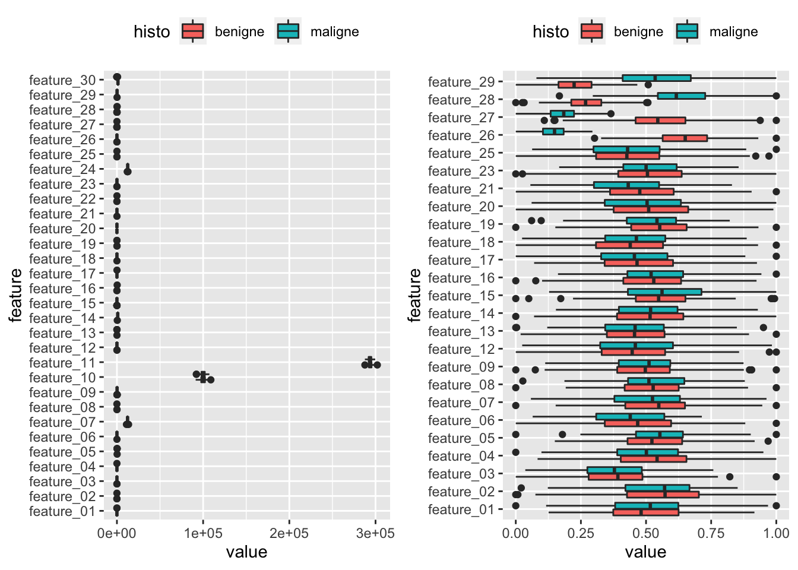
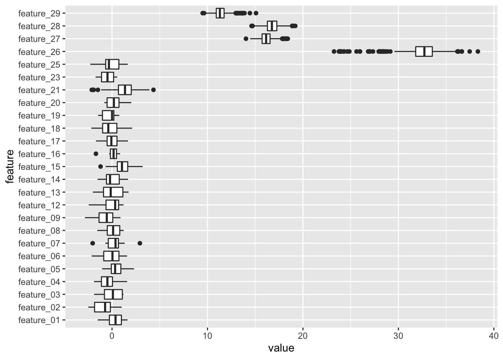
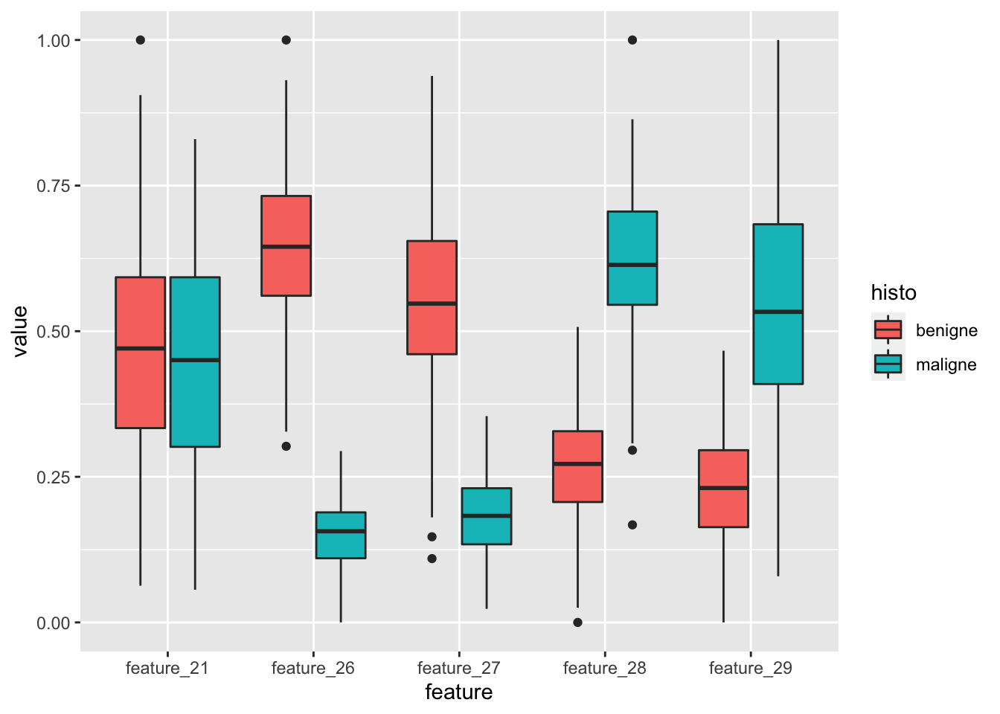
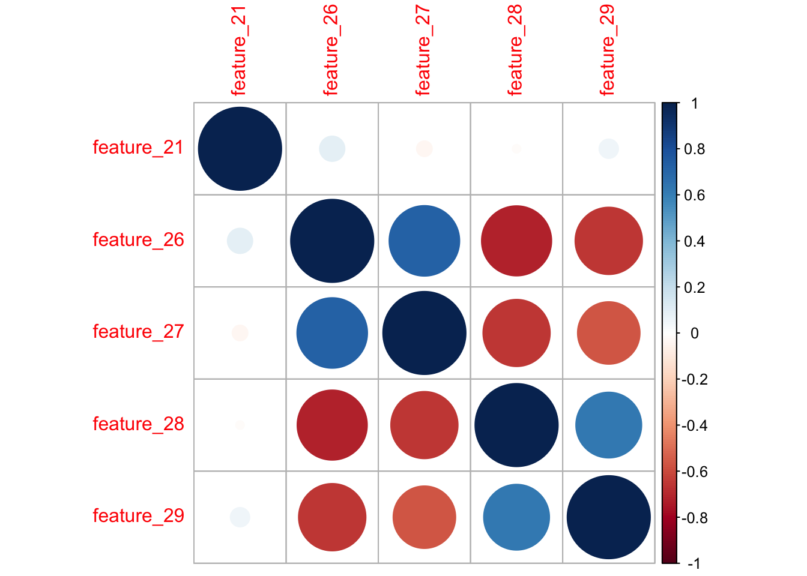

7 Bilddaten, Datenbilder: Radiomics-Analysen in R
Im letzten Kapitel wollen wir uns eine etwas vereinfachte und trotzdem realitätsnahe Radiomics-Analyse vornehmen. Dazu benutzen wir eine Datentabelle mit fiktiven Radiomics-Daten. In dem Beispiel wurden 300 Radiomics-Features für 300 Patienten berechnet, deren histologisches Ergebnis entweder “benigne” oder “maligne” war. Zur Analyse der Interrater-Reliabilität hat ein zweiter Reader für 20 Fälle ebenfalls Radiomics Features berechnet.
Das ist ein etwas vereinfachtes Beispiel und viele der nötigen Arbeitsschritte, die man schon vor der Datenanalyse in R beachten sollte sind an dieser Stelle nicht genannt. Wer sich auch in diese Aspekte einlesen will, dem sei die folgende Publikation an der auch Bettina Baeßler maßgeblich beteiligt war ans Herz gelegt:
7.1 Lernziele
In diesem Kapitel werden folgende Themen besprochen:
- Eine beispielhafte Radiomics-Analyse in R nachvollziehen
Fig. 3 aus “Radiomics in medical imaging—“how-to” guide and critical reflection”
7.2 Daten einlesen
Wie in jedem Projekt müssen wir zunächst einmal die Daten einlesen. Dafür benötigen wir die Datei sample_radiomics_data.csv (~Download~). Die Datei ist, wie üblich auf Systemen mit deutschen Spracheinstellungen, so formatiert, dass das Semikolon ; als Trennzeichen verwendet wird und das Komma , als Dezimaltrenner. Im Tidyverse gibt es dafür die Funktion read_csv2(), die genau dies als Vorseinstellung bereits berücksichtigt (im Gegensatz zu read_csv(), die das Komma , als Trennzeichen verwendet und den Punkt . als Dezimaltrenner).
radiomics_daten <- read_csv2("sample_radiomics_data.csv")Für einen ersten Überblick über die Daten eignet sich wie immer gut die Funktion dfSummary() aus den Paket summarytools. Wer lieber in Basis-R bleiben möchte, verwendet bspw. die Funktion str().
# beides wird hier nicht ausgeführt, da der Output zu lang wäre
library(summarytools)
dfSummary(radiomics_daten) %>% view()
str(radiomics_daten)Wichtig ist hier noch zu erwähnen, dass die Funktion read_csv2() für Spalten, die Text enthalten, automatisch den Typ character annimmt. Das ist für fast alle Fälle das gewünschte Ergebnis, da wir aber im weiteren benötigen werden, dass unsere Zielvariable histo den Typ factor hat, korrigieren wir das hier noch.
radiomics_daten <- radiomics_daten %>%
mutate(histo = factor(histo))7.3 Interreader Variabilität
Der nächste wichtige Schritt ist das identifizieren reproduzierbarer Features, bzw. genauer gesagt das Eliminieren nicht-reproduzierbarer Features vor der weiteren Datenanalyse (siehe Grafik in 7.1).
In unserem Beispiel wollen wir nun zunächst für jedes der 30 Features den “Concordance Correlation Coefficient” berechnen. Dafür können wir die Funktion CCC() aus dem Paket DescTools nutzen. Allerdings wäre es sehr mühsam jeden der 30 Vergleiche von Hand zu schreiben, die Ergebnisse zu speichern und dann die entsprechenden Features auszuwählen und bspw. in einer Variablen zu speichern. Insbesondere wäre so ein Vorgehen unpraktisch, wenn sich an den Daten etwas ändert, vielleicht sogar eine Variable hinzukäme. Und man müsste immer aufpassen, die richtigen Namen in der entsprechenden Variablen zu speichern.
Erfreulicherweise können wir uns vieler praktischer Features aus dem Tidyverse bedienen, um dies in einem einzigen Arbeitsschritt zu erledigen, der dann auch direkt die Namen der nicht-reproduzierbaren Features in einer Variablen speichert, unabhängig von der Zahl der zu untersuchenden Variablen. Die beiden entscheidenden Schritte hier sind die Funktion split() aus Basis-R und die Funktion map_df() aus dem Tidyverse. Letztere Funktion ist extrem nützlich in vielen Anwendungsfällen, die Nutzung erschließt sich aber nicht auf den ersten Blick (daher hier noch zwei Links zur Erklärung, aber nicht frustrieren lassen, wenn es sich trotzdem nicht direkt erschließt: Post von Matt Upson, Post von Rebecca Barter).
library(DescTools)
# Zur einfacheren Nachvollziehbarkeit kann es praktisch sein die einzelnen Schritte separat auszuführen
# und das jeweilige Ergebniss anzuschauen
features.nonreproducible <- radiomics_daten %>%
# zunächst transformieren wir unsere Daten so, dass eine lange Tabelle
# entsteht, die statt 33 Spalten nur 5 Spalten hat, dafür aber statt 320
# Zeilen 9600 Zeilen, sodass eine Spalte den Namen des Features enthält,
# und eine weitere den Wert des jeweiligen Features
pivot_longer(-c(reader, histo, PatID), names_to = "feature") %>%
# als nächstes wollen wir die Tabelle so transformieren, dass je eine Spalte
# für reader_01 und eine für reader_02 entsteht, denn für die Funktion CCC
# müssen die Daten in diesem Format vorliegen
pivot_wider(names_from = reader, values_from = value) %>%
# hier entfernen wir alle Zeilen, in denen es keinen Wert für reader_02
# gibt, der ja nur einen Teil der Daten, nämlich nur 20 Fälle ausgewertet
# hatte
filter(!is.na(reader_02)) %>%
# nun Teilen wir mit split() unser Dataframe in viele Dataframes auf,
# die jeweils nur ein Feature enthalten, in unserem Beispiel erhalten
# wir hier also eine sog. Liste mit 30 Dataframes
split(.$feature) %>%
# nun nutzen wir map_df() um die Funktion CCC in jedem der 30 Dataframes
# anzuwenden, als Ergebnis erhalten wir ein einziges Dataframe mit den
# 30 berechneten CCCs, dem fügen wir noch den Namen der Features als Spalte
# hinzu.
map_df(~ add_column(CCC(.$reader_01, .$reader_02, ci = "z-transform", conf.level = 0.95, na.rm = TRUE)$rho.c, feature = unique(.$feature), .before = 1)) %>%
# als nächstes filtern wir das Dataframe so, dass wir nur die Zeilen der
# Features erhalten, deren CCC-Wert unterhalb der von uns gesetzten Grenze
# von 0,8 lag.
filter(est < 0.8) %>%
# als letzten Schritt holen wir uns die Namen der Features aus der
# entsprechenden Spalte des Dataframes, nur diese werden dann in der
# oben angegebenen Variable gespeichert.
pull(feature)
features.nonreproducible## [1] "feature_10" "feature_11" "feature_22" "feature_24" "feature_30"7.4 Normalisierung
Nachdem wir nun also die nicht-reproduzierbaren Features identifiziert haben, können wir uns daran machen die Daten für das folgende Machine Learning vorzubereiten (siehe Grafik in 7.1). Zunächst benötigen wir also ein Dataframe in dem nur die reproduzierbaren Features enthalten sind und nur Daten von reader_01.
radiomics_daten.reproducible <- radiomics_daten %>%
filter(reader == "reader_01") %>%
select(- all_of(features.nonreproducible))Anschließend normalisieren wir die Daten, wie in 6.6 besprochen.
library(caret)
radiomics_daten.reproducible.norm <- radiomics_daten.reproducible %>%
preProcess(method = "range") %>%
predict(radiomics_daten.reproducible)Um das Ergebnis der Normalisierung zu überprüfen, stellen wir uns das ganze einmal graphisch dar. Zur besseren Visualisierung stellen wir die Grafiken direkt nebeneinander dar, das Paket cowplot bietet dafür tolle Funktionalitäten.
library(cowplot)
plot_grid(
radiomics_daten %>%
filter(reader == "reader_01") %>%
pivot_longer(-c(reader, PatID, histo), names_to = "feature") %>%
ggplot(aes(x = feature, y = value, fill = histo)) +
geom_boxplot() +
coord_flip() +
theme(legend.position="top"),
radiomics_daten.reproducible.norm %>%
filter(reader == "reader_01") %>%
pivot_longer(-c(reader, PatID, histo), names_to = "feature") %>%
ggplot(aes(x = feature, y = value, fill = histo)) +
geom_boxplot() +
coord_flip() +
theme(legend.position="top")
)
Wir sehen also, dass die Werte alle Features erfolgreich auf einen Bereich zwischen 0 und 1 normalisiert wurden. Als nächstes können wir das Dataframe mit den reproduzierbaren und normalisierten Daten in Trainings und Testdaten aufteilen.
index.training <- createDataPartition(radiomics_daten.reproducible.norm$histo, p = 0.8, list = FALSE) %>% as.vector()
radiomics_daten.reproducible.norm.train <- radiomics_daten.reproducible.norm[index.training, ]
radiomics_daten.reproducible.norm.test <- radiomics_daten.reproducible.norm[-index.training, ]7.5 Feature Reduction
Als nächstes können wir uns nun einem der wichtigsten Schritte in unserem Workflow widmen. Der Auswahl der Features, die potentiell relevant für die Unterscheidung der zwei Gruppen (benigne vs. maligne) sein könnten (siehe Grafik in 7.1). Schließlich wäre es ja wenig hilfreich alle Features in ein Modell zu werfen, denn es kommt nicht selten vor, dass eine Vielzahl von Features keinen echten Informationsgehalt besitzen und in beiden Gruppen annähernd ähnlich verteilt sind.
Hierzu gibt es eine Vielzahl von Möglichkeiten. Ein oft benutzter Algorithmus in vielen Radiomics-Publikationen ist der sogenannte “least absolute shrinkage ans selection operator (LASSO)” (zu dem es hier auch ein schönes Tutorial gibt - verwendet das Paket glmnet). Wir wollten hier einen anderen verwenden, nämlich den sogenannten Boruta Algorithmus. Hierzu nutzen wir das Paket Boruta, das die Anwendung recht simpel macht.
Zunächst laden wir das entsprechende Paket und entfernen alle nicht benötigten Spalten aus unserem Trainings-Dataframe, sodass nur noch unsere Features und die Gruppenvariable (in unserem Fall als histo) übrig bleiben.
library(Boruta)
radiomics_daten.reproducible.norm.train.boruta <- radiomics_daten.reproducible.norm.train %>%
select(-PatID, -reader)Als nächtes wenden wir die Funktion Boruta() an und übergeben auch hier wieder eine Formel als ersten Parameter, die definiert welche Variable durch welche anderen Variablen erklärt werden soll (in diesem Fall also histo ~ .). Mit dem Parameter maxRuns können wir dem Boruta-Algorithmus noch mitteilen, wieviele Durchgänge gemacht werden sollen, um die wichtigsten Features zu identifizieren.
my.boruta <- Boruta(histo ~ ., data = radiomics_daten.reproducible.norm.train.boruta, maxRuns = 1000)
my.boruta## Boruta performed 999 iterations in 28.5579 secs.
## 4 attributes confirmed important: feature_26, feature_27, feature_28,
## feature_29;
## 20 attributes confirmed unimportant: feature_01, feature_02,
## feature_03, feature_04, feature_05 and 15 more;
## 1 tentative attributes left: feature_21;Der Boruta-Algorithmus gibt uns nun an welche Features wichtig zur Unterscheidung zwischen den Gruppen zu sein scheinen. Gelegentlich gibt der Algorithmus auch noch an, dass eine oder mehrere Variablen nicht final entschieden werden konnten. Falls dies einmal der Fall sein sollte, können wir das Ergebnis noch mit der Funktion TentativeRoughFix() bearbeiten um ein finales Ergebnis zu bekommen. Existieren keine unentschiedenen Variablen, gibt uns die Funktion einen Hinweis und das Ergebnisobjekt enthält dann einfach das unveränderte Ergebnis der Boruta()-Funktion.
my.boruta.final <- TentativeRoughFix(my.boruta)
my.boruta.final## Boruta performed 999 iterations in 28.5579 secs.
## Tentatives roughfixed over the last 999 iterations.
## 5 attributes confirmed important: feature_21, feature_26, feature_27,
## feature_28, feature_29;
## 20 attributes confirmed unimportant: feature_01, feature_02,
## feature_03, feature_04, feature_05 and 15 more;Da der Boruta-Algorithmus die Variablen in zufälliger Reihenfolge bearbeitet, kann es gelegentlich zu leicht unterschiedlichen Ergebnissen kommen. In unserem Fall sollte der Algorithmus aber vier relevante Features identifizieren: feature_26, feature_27, feature_28 und feature_29. Die Relevanz der jeweiligen Features können wir uns auch leicht visualisieren, indem wir aus dem Ergebnisobjekt my.boruta.final das Element ImpHistory untersuchen.
my.boruta.final$ImpHistory %>%
as_tibble() %>%
select(- starts_with("shadow")) %>%
pivot_longer(everything(), names_to = "feature", values_to = "value") %>%
ggplot(aes(x = feature, y = value)) +
geom_boxplot() +
coord_flip()
Wir können leicht erkennen, dass feature_26 am wichtigsten zu sein scheint, d.h. die beste Trennschärfe zwischen den Gruppen bietet, die übrigen drei wichtigen Feature sind relativ nah beieinander. Für die weiteren Analysen können wir nun die als wichtig bestätigten Features aus unserem Trainingsdatensatz selektieren. Die relevanten Features finden wir in dem Element finalDecision innerhalb des Ergebnisobjektes my.boruta.final.
# es ist etwas komfortabler die unwichtigen Features in einer Variable zu speichern und
# diese dann zu nutzen um sie aus dem Trainingsdatensatz zu entfernen, daher hier der Umweg
features.nonrelevant <- my.boruta.final$finalDecision %>%
enframe() %>%
filter(value != "Confirmed") %>%
pull(name)
radiomics_daten.reproducible.norm.train.boruta.relevant <- radiomics_daten.reproducible.norm.train.boruta %>%
select(- all_of(features.nonrelevant))An dieser Stelle kann es sich lohnen einmal die als relevant identifizierten Features einmal in Abhängigkeit der jeweiligen Gruppe zu visualisieren (siehe Grafik in 7.1).
radiomics_daten.reproducible.norm.train.boruta.relevant %>%
pivot_longer(-histo, names_to = "feature") %>%
ggplot(aes(x = feature, y = value, fill = histo)) +
geom_boxplot()
Wir sehen, dass in der Tat vier Features identifiziert wurden, die offenbar relevante Unterschiede zwischen den beiden Gruppen (benigne vs. maligne) aufweisen. Bevor wir aber nun zum finalen Schritte, dem Training eines Klassifizierungsmodells schreiten, bleibt noch ein wichtiger Zwischenschritt.
7.6 Korrelationsanalyse
In der vorangegangenen Grafik erkennen wir, dass feature_26 und feature_27 sich in etwa ähnlich verhalten, d.h. höhere Werte bei benigner Histologie haben. Gleiches in etwa gilt mit umgekehrten Vorzeichen für feature_28 und feature_29, hier haben Fälle mit maligner Histologie höhere Werte. Es wäre also nun zu prüfen, ob die Werte der Features innerhalb der jeweiligen Feature-Paare korrelieren oder nicht. Sollte sich hier eine starke Korrelation ergeben, wäre es sinnvoll in dem finalen nur jeweils eines der Features des jeweiligen Paares einzuschließen, da sich in eng miteinander korrelierten Features kein relevanter Zugewinn an Informationen ergibt (siehe Grafik in 7.1).
Hierzu können wir die Funktion cor() aus Basis-R nutzen, um die Korrelationskoeffizienten für alle Kombinationen von Features zu berechnen. Das Ergebnis dieser Funktion ist eine Korrelationsmatrix, die wir mithilfe der Funktion corrplot() aus dem gleichnamigen Paket corrplot einfach visualisieren können.
library(corrplot)
radiomics_daten.reproducible.norm.train.boruta.relevant %>%
select(-histo) %>%
cor() %>%
corrplot()
Die Vermutung, dass die Werte der Features innerhalb der beiden oben genannten Feature-Paare stark korrelieren bestätigen sich. In einem Fall mit derart wenigen Fällen, können wir das geeignetste Feature der jeweiligen “Cluster” händisch selbst wählen. Gemessen an den “Wichtigkeiten”, die wir als Ergebnis des Boruta-Algorithmus erhalten hatten (siehe 7.5), fällt die Entscheidung recht leicht auf feature_26 und feature_28.
In Föllen mit mehr relevanten Features können natürlich auch kompliziertere Verfahren zur Auswahl der Features aus den jeweiligen Clustern nötig sein. Diese behandeln wir an dieser Stelle nicht. Im Allgemeinen kann aber grob gesagt werden, dass in ein finales Modell nicht mehr als etwa 10 Features eingehen sollten.
7.7 Fitten und Testen des Modells
Nun kommt der interessanteste aller Schritte, der aber letztlich nach der ganzen Vorarbeit vermutlich der einfachste von allen sein dürfte.
Da aufgrund der überschaubaren Anzahl an letztlich relevanten Features kein besonders komplexer Machine Learning-Algorithmus nötig sein dürfte, verwenden wir an dieser Stelle eine einfache logistische Regression (siehe 6.5). Der entsprechende Code ist einfach: der Funktion glm() übergeben wir als Parameter die Formel mit unseren beiden wichtigsten Features (feature_26 und feature_28) und der Zielvariable (histo) sowie die normalisierten Trainingsdaten als Grundlage für das Fitting.
fitted.model <- glm(histo ~ feature_26 + feature_28, data = radiomics_daten.reproducible.norm.train, family = "binomial")
summary(fitted.model)##
## Call:
## glm(formula = histo ~ feature_26 + feature_28, family = "binomial",
## data = radiomics_daten.reproducible.norm.train)
##
## Deviance Residuals:
## Min 1Q Median 3Q Max
## -7.413e-05 -2.100e-08 -2.100e-08 2.100e-08 8.155e-05
##
## Coefficients:
## Estimate Std. Error z value Pr(>|z|)
## (Intercept) 13.19 36029.03 0.000 1.000
## feature_26 -231.62 89966.65 -0.003 0.998
## feature_28 164.71 87417.42 0.002 0.998
##
## (Dispersion parameter for binomial family taken to be 1)
##
## Null deviance: 3.0553e+02 on 239 degrees of freedom
## Residual deviance: 1.4618e-08 on 237 degrees of freedom
## AIC: 6
##
## Number of Fisher Scoring iterations: 25An dieser Stelle sollte man sich nicht über das etwas seltsame Ergebnis des Fitting wundern. In diesen fiktiven Daten war die Trennschärfe der relevanten Features bewusst absolut gesetzt, weshalb sich hier ein perfekt trennendes Modell ergibt. Und das natürlich auch in den Testdaten, was wir uns dann hier auch noch als ROC-Kurve visualisieren können (siehe auch 6.5.1).
radiomics_daten.reproducible.norm.test.predict <- radiomics_daten.reproducible.norm.test %>%
add_column(prediction_value = predict(fitted.model, radiomics_daten.reproducible.norm.test))
library(pROC)
radiomics_daten.reproducible.norm.test.predict %>%
roc(histo, prediction_value) %>%
ggroc(color = "steelblue", size = 1) +
geom_segment(aes(x = 1, xend = 0, y = 0, yend = 1),
color="grey", linetype="dashed") +
coord_fixed()Ein so perfektes Ergebnis findet sich natürlich in Realität selten und sollte hier nur zur Veranschaulichung der verschiedenen Schritte einer Radiomics-Analyse dienen.
7.8 Das Ende. Vielen Dank!
Wir hoffen, das Begleitbuch und unsere Webinare haben den einen oder anderen dazu bewogen sich intensiver mit den vielfältigen Möglichkeiten in R und RStudio zu beschäftigen. Natürlich könnte man noch viele anderen Themen bearbeiten und etwas realistischere und kompliziertere Radiomics- bzw. Machine Learning Anwendungen diskutieren. Wir haben aber versucht einigermaßen ein Gleichgewicht zwischen Praktikabilität und Praxisnähe zu finden und hoffen wir haben das einigermaßen erfolgreich gemacht.
Über Kommentare, Rückfragen, Wünsche und Verbesserungsvorschläge freuen wir und sehr! Und sollte sich jemand in ähnlicher Weise engagieren wollen, vielleicht ja sogar mit einem ähnlichen Format zu Programmierung in Python, kann er sich gerne bei uns (Bettina Baeßler und Daniel Pinto dos Santos), der DRG oder der AGIT melden.
In diesem Sinne beste Grüße und vielleicht bis bald!